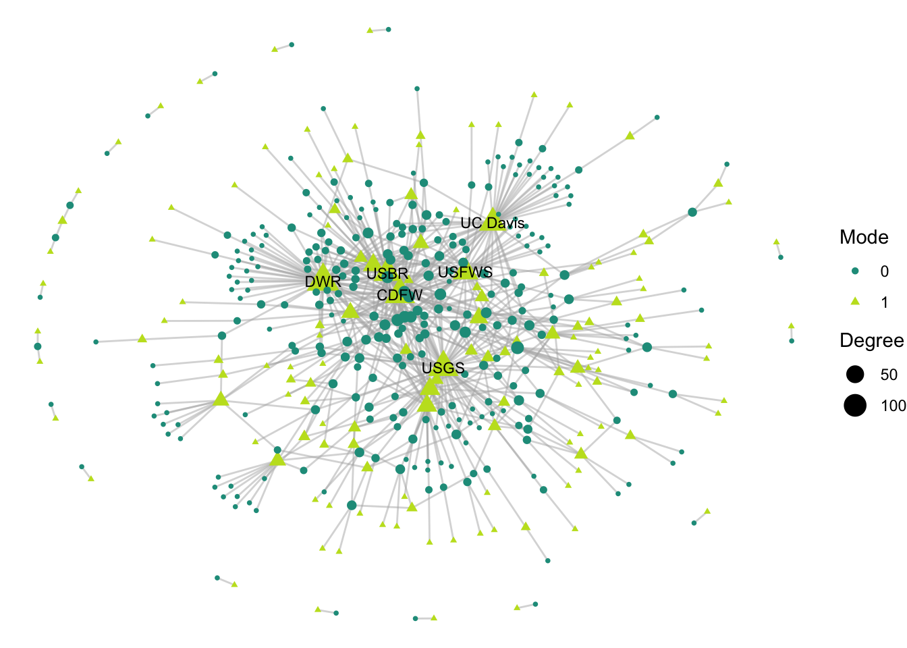

7 Normalized degree for both modes… (see Ebba)
# NORMALIZED degrees and label
net2 %v% 'degree_norm' <- sna::degree(net2, rescale = T)
# make a table, project id as rows and org id as columns
#inc_mat <- table(edges_2mode[c('project_id', 'org_id')])
degree_norm_bip <- bipartite::ND(as.matrix(net2))
# output has two measures of degree: one for 'lower' and one for 'higher'
# 'lower' is for for the rows, so in our case, projects
length(degree_norm_bip$lower) == length(unique(edges_2mode$project_id))## [1] FALSE# this is compatible with mode 0, which are the second half of the nodes
net2 %v% 'mode'## [1] 1 1 1 1 1 1 1 1 1 1 1 1 1 1 1 1 1 1 1 1 1 1 1 1 1 1 1 1 1 1 1 1 1 1 1 1 1
## [38] 1 1 1 1 1 1 1 1 1 1 1 1 1 1 1 1 1 1 1 1 1 1 1 1 1 1 1 1 1 1 1 1 1 1 1 1 1
## [75] 1 1 1 1 1 1 1 1 1 1 1 1 1 1 1 1 1 1 1 1 1 1 1 1 1 1 1 1 1 1 1 1 1 1 1 1 1
## [112] 1 1 1 1 1 1 1 1 1 1 1 1 1 1 1 1 1 1 1 1 1 1 1 1 1 1 1 0 0 0 0 0 0 0 0 0 0
## [149] 0 0 0 0 0 0 0 0 0 0 0 0 0 0 0 0 0 0 0 0 0 0 0 0 0 0 0 0 0 0 0 0 0 0 0 0 0
## [186] 0 0 0 0 0 0 0 0 0 0 0 0 0 0 0 0 0 0 0 0 0 0 0 0 0 0 0 0 0 0 0 0 0 0 0 0 0
## [223] 0 0 0 0 0 0 0 0 0 0 0 0 0 0 0 0 0 0 0 0 0 0 0 0 0 0 0 0 0 0 0 0 0 0 0 0 0
## [260] 0 0 0 0 0 0 0 0 0 0 0 0 0 0 0 0 0 0 0 0 0 0 0 0 0 0 0 0 0 0 0 0 0 0 0 0 0
## [297] 0 0 0 0 0 0 0 0 0 0 0 0 0 0 0 0 0 0 0 0 0 0 0 0 0 0 0 0 0 0 0 0 0 0 0 0 0
## [334] 0 0 0 0 0 0 0 0 0 0 0 0 0 0 0 0 0 0 0 0 0 0 0 0 0 0 0 0 0 0 0 0 0 0 0 0 0
## [371] 0 0 0 0 0 0 0 0 0 0 0 0 0 0 0 0 0 0 0 0 0 0 0 0 0 0 0 0 0 0 0 0 0 0 0 0 0
## [408] 0 0 0 0 0 0 0 0 0 0 0 0 0 0 0 0 0 0 0 0 0 0 0 0 0 0 0 0# So we want to assign this bipartite degree in accordance with that order
# BUT, note that this function orders degree based on numeric order of id,
# which may not align with the node order
nd_output <- c(degree_norm_bip$higher, degree_norm_bip$lower)
net2 %v% 'vertex.names' == names(nd_output)## [1] FALSE FALSE FALSE FALSE FALSE FALSE FALSE FALSE FALSE FALSE FALSE FALSE
## [13] FALSE FALSE FALSE FALSE FALSE FALSE FALSE FALSE FALSE FALSE FALSE FALSE
## [25] FALSE FALSE FALSE FALSE FALSE FALSE FALSE FALSE FALSE FALSE FALSE FALSE
## [37] FALSE FALSE FALSE FALSE FALSE FALSE FALSE FALSE FALSE FALSE FALSE FALSE
## [49] FALSE FALSE FALSE FALSE FALSE FALSE FALSE FALSE FALSE FALSE FALSE FALSE
## [61] FALSE FALSE FALSE FALSE FALSE FALSE FALSE FALSE FALSE FALSE FALSE FALSE
## [73] FALSE FALSE FALSE FALSE FALSE FALSE FALSE FALSE FALSE FALSE FALSE FALSE
## [85] FALSE FALSE FALSE FALSE FALSE FALSE FALSE FALSE FALSE FALSE FALSE FALSE
## [97] FALSE FALSE FALSE FALSE FALSE FALSE FALSE FALSE FALSE FALSE FALSE FALSE
## [109] FALSE FALSE FALSE FALSE FALSE FALSE FALSE FALSE FALSE FALSE FALSE FALSE
## [121] FALSE FALSE FALSE FALSE FALSE FALSE FALSE FALSE FALSE FALSE FALSE FALSE
## [133] FALSE FALSE FALSE FALSE FALSE FALSE FALSE FALSE FALSE FALSE FALSE FALSE
## [145] FALSE FALSE FALSE FALSE FALSE FALSE FALSE FALSE FALSE FALSE FALSE FALSE
## [157] FALSE FALSE FALSE FALSE FALSE FALSE FALSE FALSE FALSE FALSE FALSE FALSE
## [169] FALSE FALSE FALSE FALSE FALSE FALSE FALSE FALSE FALSE FALSE FALSE FALSE
## [181] FALSE FALSE FALSE FALSE FALSE FALSE FALSE FALSE FALSE FALSE FALSE FALSE
## [193] FALSE FALSE FALSE FALSE FALSE FALSE FALSE FALSE FALSE FALSE FALSE FALSE
## [205] FALSE FALSE FALSE FALSE FALSE FALSE FALSE FALSE FALSE FALSE FALSE FALSE
## [217] FALSE FALSE FALSE FALSE FALSE FALSE FALSE FALSE FALSE FALSE FALSE FALSE
## [229] FALSE FALSE FALSE FALSE FALSE FALSE FALSE FALSE FALSE FALSE FALSE FALSE
## [241] FALSE FALSE FALSE FALSE FALSE FALSE FALSE FALSE FALSE FALSE FALSE FALSE
## [253] FALSE FALSE FALSE FALSE FALSE FALSE FALSE FALSE FALSE FALSE FALSE FALSE
## [265] FALSE FALSE FALSE FALSE FALSE FALSE FALSE FALSE FALSE FALSE FALSE FALSE
## [277] FALSE FALSE FALSE FALSE FALSE FALSE FALSE FALSE FALSE FALSE FALSE FALSE
## [289] FALSE FALSE FALSE FALSE FALSE FALSE FALSE FALSE FALSE FALSE FALSE FALSE
## [301] FALSE FALSE FALSE FALSE FALSE FALSE FALSE FALSE FALSE FALSE FALSE FALSE
## [313] FALSE FALSE FALSE FALSE FALSE FALSE FALSE FALSE FALSE FALSE FALSE FALSE
## [325] FALSE FALSE FALSE FALSE FALSE FALSE FALSE FALSE FALSE FALSE FALSE FALSE
## [337] FALSE FALSE FALSE FALSE FALSE FALSE FALSE FALSE FALSE FALSE FALSE FALSE
## [349] FALSE FALSE FALSE FALSE FALSE FALSE FALSE FALSE FALSE FALSE FALSE FALSE
## [361] FALSE FALSE FALSE FALSE FALSE FALSE FALSE FALSE FALSE FALSE FALSE FALSE
## [373] FALSE FALSE FALSE FALSE FALSE FALSE FALSE FALSE FALSE FALSE FALSE FALSE
## [385] FALSE FALSE FALSE FALSE FALSE FALSE FALSE FALSE FALSE FALSE FALSE FALSE
## [397] FALSE FALSE FALSE FALSE FALSE FALSE FALSE FALSE FALSE FALSE FALSE FALSE
## [409] FALSE FALSE FALSE FALSE FALSE FALSE FALSE FALSE FALSE FALSE FALSE FALSE
## [421] FALSE FALSE FALSE FALSE FALSE FALSE FALSE FALSE FALSE FALSE FALSE FALSE
## [433] FALSE FALSE FALSEnd_output_df <- data.frame('degreeN' = nd_output,
'id' = names(nd_output))
nd_output_sorted <- nd_output_df[match((net2 %v% 'vertex.names'),
nd_output_df $id),]
net2 %v% 'vertex.names' == nd_output_sorted$id## [1] TRUE TRUE TRUE TRUE TRUE TRUE TRUE TRUE TRUE TRUE TRUE TRUE TRUE TRUE TRUE
## [16] TRUE TRUE TRUE TRUE TRUE TRUE TRUE TRUE TRUE TRUE TRUE TRUE TRUE TRUE TRUE
## [31] TRUE TRUE TRUE TRUE TRUE TRUE TRUE TRUE TRUE TRUE TRUE TRUE TRUE TRUE TRUE
## [46] TRUE TRUE TRUE TRUE TRUE TRUE TRUE TRUE TRUE TRUE TRUE TRUE TRUE TRUE TRUE
## [61] TRUE TRUE TRUE TRUE TRUE TRUE TRUE TRUE TRUE TRUE TRUE TRUE TRUE TRUE TRUE
## [76] TRUE TRUE TRUE TRUE TRUE TRUE TRUE TRUE TRUE TRUE TRUE TRUE TRUE TRUE TRUE
## [91] TRUE TRUE TRUE TRUE TRUE TRUE TRUE TRUE TRUE TRUE TRUE TRUE TRUE TRUE TRUE
## [106] TRUE TRUE TRUE TRUE TRUE TRUE TRUE TRUE TRUE TRUE TRUE TRUE TRUE TRUE TRUE
## [121] TRUE TRUE TRUE TRUE TRUE TRUE TRUE TRUE TRUE TRUE TRUE TRUE TRUE TRUE TRUE
## [136] TRUE TRUE TRUE TRUE TRUE TRUE TRUE TRUE TRUE TRUE TRUE TRUE TRUE TRUE TRUE
## [151] TRUE TRUE TRUE TRUE TRUE TRUE TRUE TRUE TRUE TRUE TRUE TRUE TRUE TRUE TRUE
## [166] TRUE TRUE TRUE TRUE TRUE TRUE TRUE TRUE TRUE TRUE TRUE TRUE TRUE TRUE TRUE
## [181] TRUE TRUE TRUE TRUE TRUE TRUE TRUE TRUE TRUE TRUE TRUE TRUE TRUE TRUE TRUE
## [196] TRUE TRUE TRUE TRUE TRUE TRUE TRUE TRUE TRUE TRUE TRUE TRUE TRUE TRUE TRUE
## [211] TRUE TRUE TRUE TRUE TRUE TRUE TRUE TRUE TRUE TRUE TRUE TRUE TRUE TRUE TRUE
## [226] TRUE TRUE TRUE TRUE TRUE TRUE TRUE TRUE TRUE TRUE TRUE TRUE TRUE TRUE TRUE
## [241] TRUE TRUE TRUE TRUE TRUE TRUE TRUE TRUE TRUE TRUE TRUE TRUE TRUE TRUE TRUE
## [256] TRUE TRUE TRUE TRUE TRUE TRUE TRUE TRUE TRUE TRUE TRUE TRUE TRUE TRUE TRUE
## [271] TRUE TRUE TRUE TRUE TRUE TRUE TRUE TRUE TRUE TRUE TRUE TRUE TRUE TRUE TRUE
## [286] TRUE TRUE TRUE TRUE TRUE TRUE TRUE TRUE TRUE TRUE TRUE TRUE TRUE TRUE TRUE
## [301] TRUE TRUE TRUE TRUE TRUE TRUE TRUE TRUE TRUE TRUE TRUE TRUE TRUE TRUE TRUE
## [316] TRUE TRUE TRUE TRUE TRUE TRUE TRUE TRUE TRUE TRUE TRUE TRUE TRUE TRUE TRUE
## [331] TRUE TRUE TRUE TRUE TRUE TRUE TRUE TRUE TRUE TRUE TRUE TRUE TRUE TRUE TRUE
## [346] TRUE TRUE TRUE TRUE TRUE TRUE TRUE TRUE TRUE TRUE TRUE TRUE TRUE TRUE TRUE
## [361] TRUE TRUE TRUE TRUE TRUE TRUE TRUE TRUE TRUE TRUE TRUE TRUE TRUE TRUE TRUE
## [376] TRUE TRUE TRUE TRUE TRUE TRUE TRUE TRUE TRUE TRUE TRUE TRUE TRUE TRUE TRUE
## [391] TRUE TRUE TRUE TRUE TRUE TRUE TRUE TRUE TRUE TRUE TRUE TRUE TRUE TRUE TRUE
## [406] TRUE TRUE TRUE TRUE TRUE TRUE TRUE TRUE TRUE TRUE TRUE TRUE TRUE TRUE TRUE
## [421] TRUE TRUE TRUE TRUE TRUE TRUE TRUE TRUE TRUE TRUE TRUE TRUE TRUE TRUE TRUEnet2 %v% 'degree_norm_bip' <- nd_output_sorted$degreeN
# Note: normalizing the degree for the whole network vs. normalizing degree for
# each mode is a different process
(net2 %v% 'degree_norm')[net2 %v% 'vertex.names' == 49590]## [1] 0.0007352941(net2 %v% 'degree_norm_bip')[net2 %v% 'vertex.names' == 49590]## [1] 0.003367003topdeg_mode0 <- data.frame("deg" = (net2 %v% 'degree_norm_bip')[net2 %v% 'mode' == 0]) %>%
top_n(3)## Selecting by degtopdeg_mode1 <- data.frame("deg" = (net2 %v% 'degree_norm_bip')[net2 %v% 'mode' == 1]) %>%
top_n(3)## Selecting by degnet2 %v% 'labels_bip' <- ifelse((net2 %v% 'degree_norm_bip') %in% topdeg_mode0$deg & net2 %v% 'mode' == 0, net2 %v% 'name',
ifelse((net2 %v% 'degree_norm_bip') %in% topdeg_mode1$deg & net2 %v% 'mode' == 1, net2 %v% 'name', ''))ggraph(net2, layout = 'fr') +
geom_edge_link(width = 0.5, alpha = 0.5, color = "gray70") +
geom_node_point(aes(size = net2 %v% 'degree_norm_bip',
shape = factor(net2 %v% 'mode'),
color = factor(net2 %v% 'mode'))) +
theme_void() +
scale_color_viridis_d() +
geom_node_text(aes(label = net2 %v% 'labels_bip'),
size = 2,
color="black") +
labs(size = "Degree", color = "Mode", shape = "Mode")But I want to demonstrate that there can be no connections between projects or between collaborators, in this network, so let’s pick a layout that demonstrates that
Bipartite minimizes edge crossing
net2 %v% 'type' <- ifelse(net2 %v% 'mode' == 0, T, F)
ggraph(net2, layout = 'bipartite') +
geom_edge_link(width = 0.5, alpha = 0.5, color = "gray70") +
geom_node_point(aes(size = net2 %v% 'degree_norm_bip',
shape = factor(net2 %v% 'mode'),
color = factor(net2 %v% 'mode')),
alpha = .75) +
theme_void() +
scale_color_viridis_d() +
geom_node_text(aes(label = net2 %v% 'labels_bip'),
size = 2,
color="black") +
labs(size = "Degree", color = "Mode", shape = "Mode")
Add a guide: I only want one legend
ggraph(net2, layout = 'bipartite') +
geom_edge_link(width = 0.5, alpha = 0.5, color = "gray70") +
geom_node_point(aes(size = net2 %v% 'degree_norm_bip',
shape = factor(net2 %v% 'mode'),
color = factor(net2 %v% 'mode')),
alpha = .75) +
theme_void() +
scale_color_viridis_d() +
geom_node_text(aes(label = net2 %v% 'labels_bip'),
size = 2,
color="black") +
labs(color = "Mode", shape = "Mode") +
guides(colour = "legend", shape = "legend", size = "none")7.1 Leaders versus contributors?
We can return to the idea of subnetworks.
7.1.1 Induce subgraphs by edge
# Induce subgraphs based on those edges
net2_l <- network::get.inducedSubgraph(net2,
eid = which(net2 %e% 'leadership' == T))
net2_c <- network::get.inducedSubgraph(net2,
eid = which(net2 %e% 'contribution' == T))Now we have subgraphs
net2_l## Network attributes:
## vertices = 368
## directed = FALSE
## hyper = FALSE
## loops = FALSE
## multiple = FALSE
## bipartite = 71
## total edges= 297
## missing edges= 0
## non-missing edges= 297
##
## Vertex attribute names:
## degree degree_norm degree_norm_bip enddate funds labels labels_bip mgmt_Environmentalconditions mgmt_Floodriskandlandusemanagement mgmt_Governance mgmt_Habitatmanagement mgmt_Invasivenonnativespeciesmanagement mgmt_Nativespeciesmanagement mgmt_Waterquality mgmt_Watersupplymanagement mode n_years name sci_Amphibiansandreptiles sci_Aquaticvegetation sci_Biologicalresourceuse sci_Channelizedhabitats sci_Environmentalconditions sci_Fish sci_Floodplain sci_Foodwebs sci_Habitatchanges sci_Hydrologicchanges sci_Hydrologyandhydrodynamics sci_Invasivenonnativespecies sci_Invertebrates sci_Landuseandhumanactivities sci_Mammals sci_Nutrientsenergyandfoodweb sci_Riparianhabitats sci_Sediment sci_Species sci_Terrestrialhabitats sci_Tidalwetlands sci_Waterquality sci_Weatherandclimate startdate trunc_name type url vertex.names
##
## Edge attribute names:
## contribution leadership7.2 Climate projects
climate <- which(net2 %v% 'sci_Weatherandclimate' == T)
landuse <- which(net2 %v% 'sci_Landuseandhumanactivities' == T)
govnc <- which(net2 %v% 'mgmt_Governance' == T)
flood <- which(net2 %v% 'mgmt_Floodriskandlandusemanagement' == T)
# this is harder for bipartite
net2_cli <- network::get.inducedSubgraph(net2,
v = climate)net2_cli## Network attributes:
## vertices = 9
## directed = FALSE
## hyper = FALSE
## loops = FALSE
## multiple = FALSE
## bipartite = 0
## total edges= 0
## missing edges= 0
## non-missing edges= 0
##
## Vertex attribute names:
## degree degree_norm degree_norm_bip enddate funds labels labels_bip mgmt_Environmentalconditions mgmt_Floodriskandlandusemanagement mgmt_Governance mgmt_Habitatmanagement mgmt_Invasivenonnativespeciesmanagement mgmt_Nativespeciesmanagement mgmt_Waterquality mgmt_Watersupplymanagement mode n_years name sci_Amphibiansandreptiles sci_Aquaticvegetation sci_Biologicalresourceuse sci_Channelizedhabitats sci_Environmentalconditions sci_Fish sci_Floodplain sci_Foodwebs sci_Habitatchanges sci_Hydrologicchanges sci_Hydrologyandhydrodynamics sci_Invasivenonnativespecies sci_Invertebrates sci_Landuseandhumanactivities sci_Mammals sci_Nutrientsenergyandfoodweb sci_Riparianhabitats sci_Sediment sci_Species sci_Terrestrialhabitats sci_Tidalwetlands sci_Waterquality sci_Weatherandclimate startdate trunc_name type url vertex.names
##
## No edge attributesclimate_alter_ids <- edges_2mode$org_id[edges_2mode$project_id %in%
(net2 %v% 'vertex.names')[climate]]
landuse_alter_ids <- edges_2mode$org_id[edges_2mode$project_id %in%
(net2 %v% 'vertex.names')[landuse]]
govnc_alter_ids <- edges_2mode$org_id[edges_2mode$project_id %in%
(net2 %v% 'vertex.names')[govnc]]
flood_alter_ids <- edges_2mode$org_id[edges_2mode$project_id %in%
(net2 %v% 'vertex.names')[flood]]climate_alters <- which(net2 %v% 'vertex.names' %in% climate_alter_ids)
landuse_alters <- which(net2 %v% 'vertex.names' %in% landuse_alter_ids)
govnc_alters <- which(net2 %v% 'vertex.names' %in% govnc_alter_ids)
flood_alters <- which(net2 %v% 'vertex.names' %in% flood_alter_ids)
net2_cli <- network::get.inducedSubgraph(net2,
v = climate,
alters = climate_alters)## Warning in permute.vertexIDs(newNet, c(newv, newalt)): Performing a cross-mode
## permutation in permute.vertexIDs. I hope you know what you're doing....net2_landuse <- network::get.inducedSubgraph(net2,
v = landuse,
alters = landuse_alters)## Warning in permute.vertexIDs(newNet, c(newv, newalt)): Performing a cross-mode
## permutation in permute.vertexIDs. I hope you know what you're doing....net2_govnc <- network::get.inducedSubgraph(net2,
v = govnc,
alters = govnc_alters)## Warning in permute.vertexIDs(newNet, c(newv, newalt)): Performing a cross-mode
## permutation in permute.vertexIDs. I hope you know what you're doing....net2_flood <- network::get.inducedSubgraph(net2,
v = flood,
alters = flood_alters)## Warning in permute.vertexIDs(newNet, c(newv, newalt)): Performing a cross-mode
## permutation in permute.vertexIDs. I hope you know what you're doing....assign_bipartite_deg_labels <- function(netname, n){
degree_norm_bip <- bipartite::ND(as.matrix(netname))
nd_output <- c(degree_norm_bip$higher, degree_norm_bip$lower)
nd_output_df <- data.frame('degreeN' = nd_output,
'id' = names(nd_output))
nd_output_sorted <- nd_output_df[match((netname %v% 'vertex.names'),
nd_output_df $id),]
netname %v% 'degree_norm_bip' <- nd_output_sorted$degreeN
topdeg_mode0 <- data.frame("deg" =
(netname %v% 'degree_norm_bip')[netname %v% 'mode' == 0]) %>%
top_n(n)
topdeg_mode1 <- data.frame("deg" =
(netname %v% 'degree_norm_bip')[netname %v% 'mode' == 1]) %>%
top_n(n)
netname %v% 'labels_org' <- ifelse((netname %v% 'degree_norm_bip') %in%
topdeg_mode1$deg &
netname %v% 'mode' == 1,
netname %v% 'name', '')
return(netname)
}net2_cli <- assign_bipartite_deg_labels(net2_cli, 3)## Selecting by deg
## Selecting by degnet2_landuse <- assign_bipartite_deg_labels(net2_landuse, 3)## Selecting by deg
## Selecting by degnet2_govnc <- assign_bipartite_deg_labels(net2_govnc, 3)## Selecting by deg
## Selecting by degnet2_flood <- assign_bipartite_deg_labels(net2_flood, 3)## Selecting by deg
## Selecting by degplot_bipartite_fx <- function(netname){
p <- ggraph(netname, layout = 'bipartite') +
geom_edge_link(width = 0.5, alpha = 0.5, color = "gray70") +
geom_node_point(aes(size = netname %v% 'degree_norm_bip',
shape = factor(netname %v% 'mode'),
color = factor(netname %v% 'mode')),
alpha = .75) +
theme_void() +
scale_color_viridis_d() +
geom_node_text(aes(label = netname %v% 'labels_org'),
size = 2,
color="black") +
labs(color = "Mode", shape = "Mode") +
guides(colour = "legend", shape = "legend", size = "none")
return(p)
}plot_bipartite_fx(net2_cli)
plot_bipartite_fx(net2_landuse)
plot_bipartite_fx(net2_govnc)plot_bipartite_fx(net2_flood)